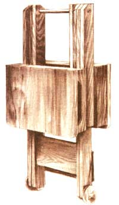
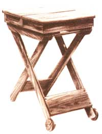
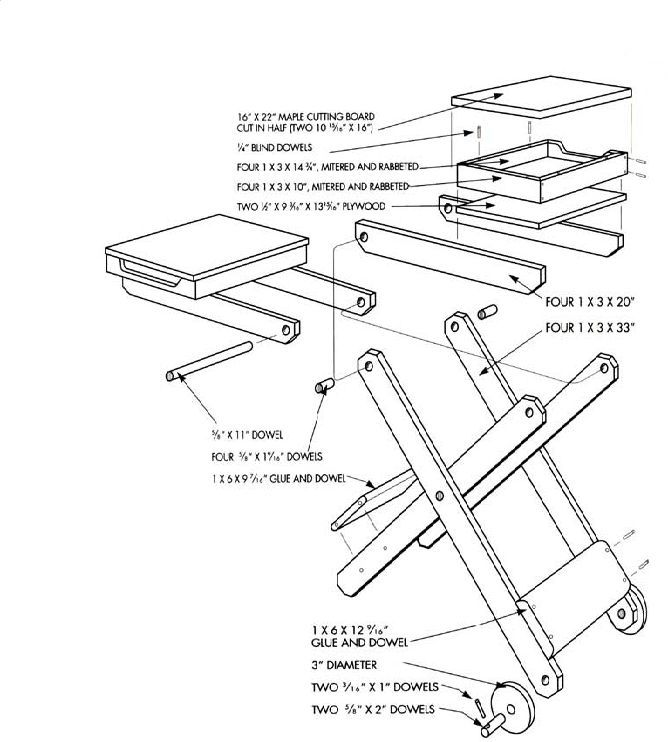

SHOP SHORT
IN HIS DAY, NOAH TOOK ON THE wo rld's biggest contract job without so much as a sawhorse to his name. At the opposite pole, some-lacking the "right" workbench or the newest equipment-would sooner chuck it all than make do with something less than perfect.
Balderdash. Generations of industrious folk have accomplished wonders using tools and equipment made by their own hands. Lest we forget, the medieval system of trade education-from apprentice to journeyman to master, still very much alive in Europe today-demands that the student work with self-made implements, if only to foster patience and a genuine rapport with the chosen medium, If master craftsmen can create works of an using homemade equipment, the rest of us should feel perfectly comfortable making household repairs with them.
Even Noah must have recognized that One absolute requirement for even the smallest of jobs was a solid, stable surface on which to work. All serious woodworkers have come to regard a shop workbench as on, slightlyness important than their right arm. But what to do when you are required to work away from the shop, in the forbidding wilderness outside your own front door?
Once you've become accustomed to a real shop workbench, sawhorses seem to come up a bit short lor outdoor jobs. No vise, no work surface, no storage. Nails end up in your Mouth; tools sprout from your pockets. You need to know yoga positions to hold a board still for sawing borders. However, there's really no need to go without when you go out. Instead, ca rry our ingenious "work aid."
Like a double-jointed pal of scissors, the two halves of the bench's top dose tighter as you bear down, making it a very effective vise. There's room for tools and even a selection of fasteners in the two compartments below the top. A couple of C-clamps will hold down a miter box for comfortable trim work. And when you're done, the carpenter's third arm folds up like a TV table.
|
 ILLUSTRATIONS ? JOSE DIAZ |
 |
 |